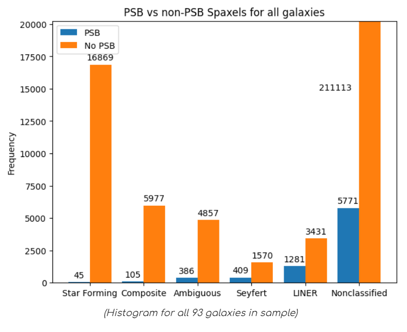
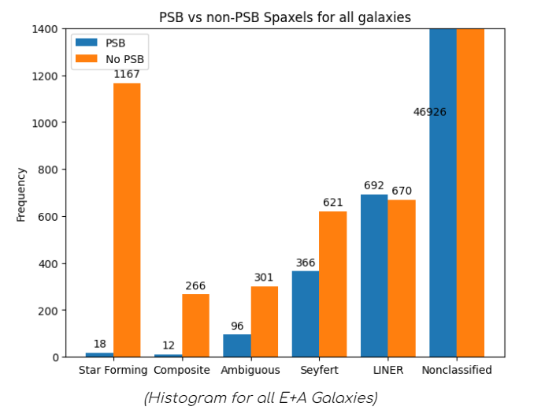
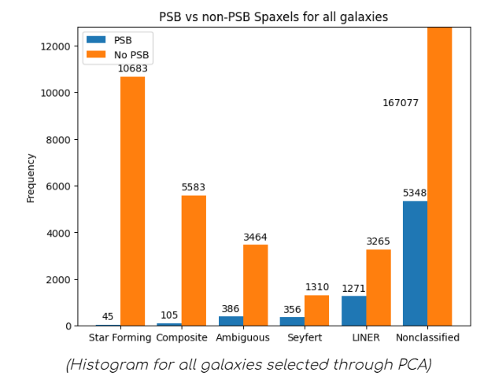
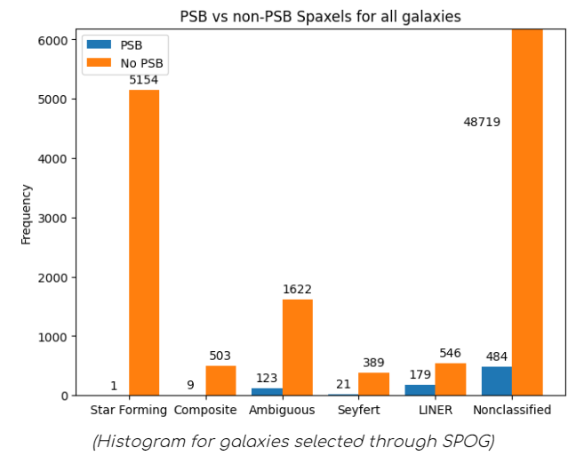
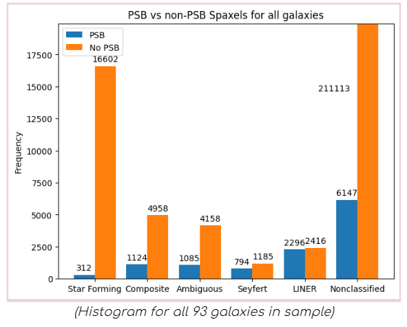
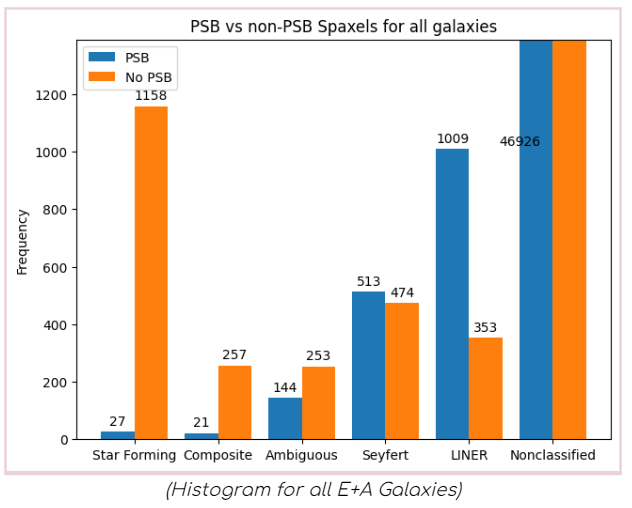
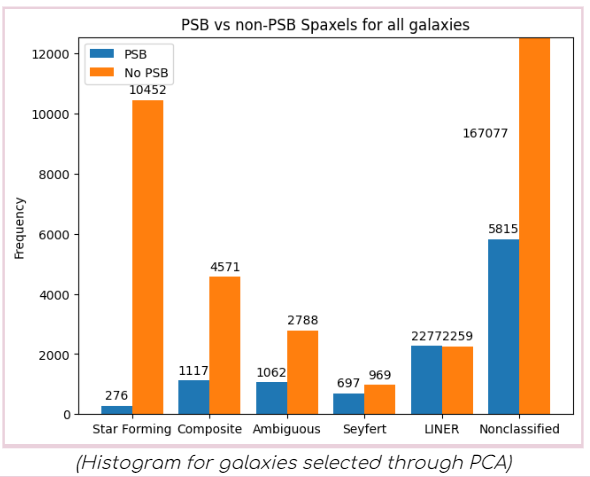
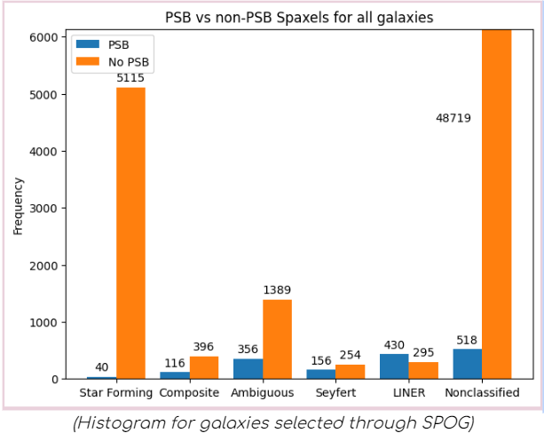

Results!#
Instead of generating plots for a single galaxy at a time, let’s aggregate a large number of galaxies together. We start with a sample of 93 galaxies that have been already identified as Post-Starburst galaxies. By doing so, we can avoid a lot of galaxies that have no Post-Starburst regions which do not contribute to our analysis.
If you would like to read more about how those galaxies were identified as PSBs, I highly recommend a read from this paper!
Result!

These 93 galaxies also have an additional attribute identifying the method (E+A Galaxies, SPOG selection, PCA selection) in which they were identified as PSBs, outlined in the same paper. Let’s run the code for these attribute subsets as well!
  
Analysis#
Star Forming Regions
As seen from all the graphs, spaxels identified as Star-Forming by the BPT diagram rarely also show Post-Starburst traces through our criteria. This does correlate with what we would expect, as Post-Starburst criterias by definition select against SF, and as such PSBs and SFs should be exclusive. The trace amount of PSB and Star-forming spaxels are likely spurious data from the edges of galaxies, where SF likely occurs, and where the SNR is likely to be lower. Our SNR cut might fail to remove some imprecise measurements which can lead to extraneous PSB selections.
Composite
Composite PSB numbers are similarly low to SF, showing rare PSB selection in composite spaxels. This could be due to the fact that since composite galaxies have a mix of star-formation and AGN energy, our PSB criteria identifies the star-forming traces from these composite spaxels, and classifies them as Non-PSBs.
Ambiguous
These spaxels could be combined into the non-classified classification. This criteria is selected based on the BPT diagrams of multiple emission lines. If two emission lines have different classifications for a spaxel in the BPT diagram, it is classified as Ambiguous. Since these data points are unclear under which classification they fall under, we chose not to include them in our analysis as of now.
Seyfert & LINER
Seyfert and LINERS show significantly higher rates of PSB spaxels, and dominate the total number of PSB spaxels compared to SF/Composite, despite having a lot less spaxels classified as Seyfert/LINERs. This is probably due to Seyfert and LINERs being AGN dominated, and therefore we observe Star-Formation suppression from AGN feedback in those central spaxels. This could lead to the observed higher count of PSB spaxels.
Overall
From the lack of PSB spaxels in both the Star Forming and Composite regions, our analysis likely suggests that AGN activity is likely either related or a driver for PSB behavior and quiescence. Seyfert and LINER regions dominating areas where PSB regions are also found suggests that there is at the very least a strong correlation between the two. Our data also matches the hypothesis that AGN feedback halts star formation, and drives quiescence in galaxies, but is not proof of the latter.
Second PSB Cut#
An issue our previous cut faces is the low amount of PSB spaxels to analyze, especially in subsets such as the SPOG plot. Thus, let’s further experiment by changing our PSB criteria to be more inclusive.
We effectively increase the amount of PSB spaxel sample size by using the Chen criteria:
HδA > 3˚A , W(Hα)<10˚A, and logW(Hα) < 0.23×HδA−0.46
New results!:
   
Brief Analysis:#
With the new cut, we still observe similar trends, but also with more PSB selected spaxels across all histograms The most notable difference is in the PCA selected galaxies, where Composite galaxies comprise a significant portion of PSB spaxels. A possible cause is our new cut increasing the effective radius of our PSB “ring” as previously discussed in the PSB section. This increase could now be including a larger number of composite spaxels.
Further Work#
There are a number of ways we plan on continuing to expand the project, notably to increase our sample size and generate histograms for the entirety of the MaNGA database. This would remove the bias of our already selected PSB galaxies, and could generate interesting differences.
We would also like to further examine why the Chen cut differs from our initial cut through visual analysis of the galaxies, as well as potentially perform further different PSB cuts to examine their respective differences.